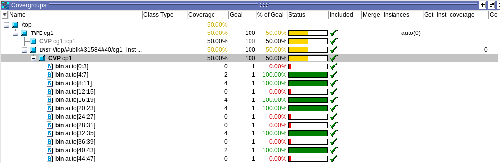
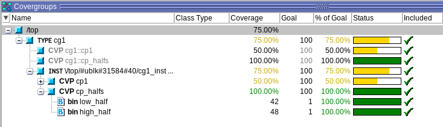
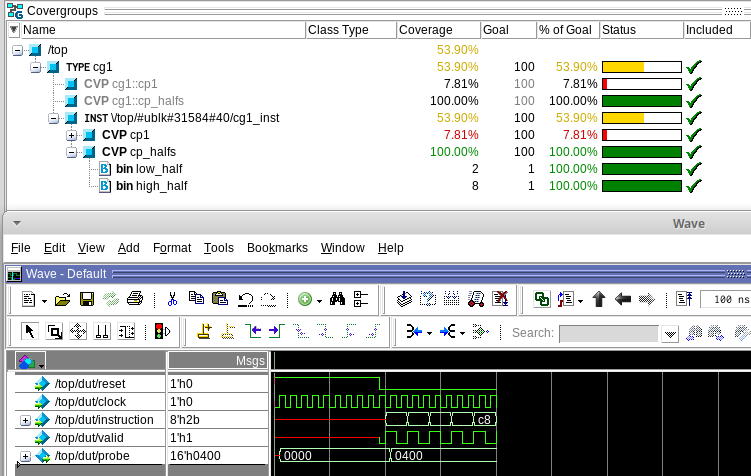
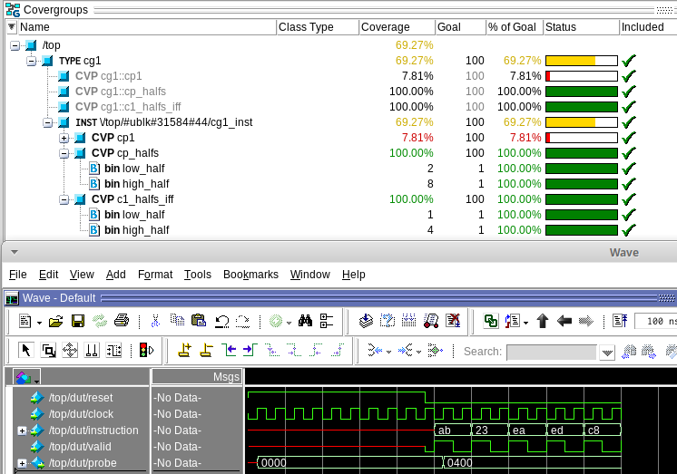

SystemVerilog has two types of functional coverage. One type is data-oriented and falls within Covergroups. The other type is control-oriented and falls within Assertions. This chapter handles covergroups and the next chapter handles Assertions.
Covergroups can exists out of multiple coverpoints. A coverpoint is a specification of an expression. That doesn’t sound very clear, so let’s try to illustrate this with an example.
In our earlier example the operation property is a bit vector with a width of 5. A number of exercises were done in which we set a required number of tests on one specific operation. So actually we kept a score on every instruction by adding a mark every time a certain instruction was spotted.
In contrast to consciously keeping score per instruction, this can be done through a coverpoint.
`include "gbprocessor_iface.sv"
`include "test.sv"
module top;
logic clock=0;
// clock generation - 100 MHz
always #5 clock = ~clock;
// instantiate an interface
gbprocessor_iface gb_iface (
.clock(clock)
);
// instantiate the DUT and connect it to the interface
gbprocessor dut (
.reset(gb_iface.reset),
.clock(clock),
.instruction(gb_iface.instruction),
.valid(gb_iface.valid),
.probe(gb_iface.probe)
);
// SV testing
test tst(gb_iface);
// cg1 defines a covergroup and is sampled at rising edge
covergroup cg1 @(posedge clock);
c1: coverpoint gb_iface.instruction;
endgroup
// make an instance of cg1
initial begin
cg1 cg1_inst;
cg1_inst = new();
end
endmodule : top
The example shows the addition of a coverpoint and covergroup in the top module on the instruction signal.
On the top level a covergroup cg1 is defined. It is sampled/evaluated on the rising edge of the clock.
When the top module starts running, an instance is made of the covergroup. From this moment on, the simulator will keep a tally on the instruction bus.
Now, with the coverpoint in place, the simulator keeps track of which instructions are used. The image below shows how the Covergroups are visualised in QuestaSim. It can be seen that a number of bins are created e.g. bin auto[0:3]. This bin tallies the number of times the instruction is 0, 1, 2 or 3. The name of the bin is set to auto and the count is (at the moment of the screenshot) 0, while the next bin [4:7] has been hit 2 times.

Finally, the simulator also calculates whether the intended goal is reached or not and gives an indication on the progress. Every bin in the coverpoint has a goal of 1, meaning that a single hit in a bin marks this bin as goal reached. If a bin is hit more than the intended value, the percentage stays at 100%.
Off course these bins can be manipulated, both in name an number. This code shows another covergroup that manipulates these bins. Rather than having 64 bins, now there are only two: one for the values 0-127 and one for the values 128-255 (note the ‘$’ sign to indicate ‘rest of the range’).
covergroup cg1 @(posedge clock);
cp1: coverpoint gb_iface.instruction;
cp_halfs: coverpoint gb_iface.instruction {
bins low_half = { [0:127] };
bins high_half = { [128:$] };
}
endgroup

As can be seen from the example above, this short simulation already provides 100% coverage. All the bins have been hit at least once, so all bins are at 100%.
As can be seen from this example, it is not hard to have the simulator report 100% coverage. The art lies in setting correct coverage requirements

Now that’s a bit unfair. In this screenshot, cp_halfs reports that 10 times a bin was hit. However, the first 10 clockcycles there is a reset and the valid signal is not high. To fix this issue, there is an if-and-only-if (iff) argument.
The code below illustrates how the if-an-only-iff keyword can be used.
Also note the alternative way of checking which “half” of the 256-bit space is used.
cp_halfs: coverpoint gb_iface.instruction {
bins low_half = { [0:127] };
bins high_half = { [128:$] };
}
c1_halfs_iff: coverpoint gb_iface.instruction[7] iff(gb_iface.valid) {
bins low_half = {0};
bins high_half = {1};
}
